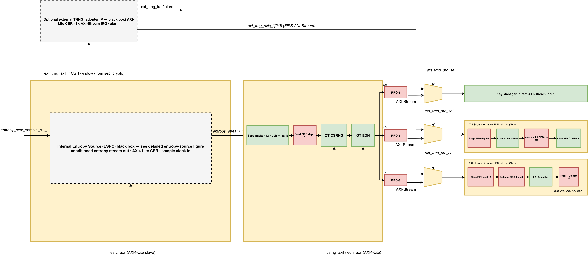

TRNG and DRBG
True Random Number Generator (TRNG)
Entropy bits are fundamental data for key generation as well as for attack countermeasure implementations. The entropy source must be high quality, meaning that it meets the NIST SP 800-90B statistical requirements for a cryptographic source.
The SEP entropy path consists of the following elements:
-
Ring-oscillator entropy source
-
Entropy decorrelation, extraction, online health testing, and SHA-256 whitening
-
CSRNG implementing the AES-CTR deterministic random bit generator (DRBG)
-
Entropy distribution network (EDN) and adapters serving the Key Manager, AES, KMAC, OTBN, and the fabric entropy pool
-
External-TRNG inputs and per-endpoint source-selection muxes
-
Coordinated software reset and CSR-path isolation for the internal entropy complex
The entropy source is typically a digital circuit employing ring oscillators which produces the random bit stream. Random bits are generated based on metastable sampling effects resulting from process, voltage and temperature variations in the delay of the asynchronous oscillator sampling. Once the entropy source is enabled it generates a continuous stream of random bits. The raw entropy stream will usually exhibit statistical biases. Debiasing is done with an LFSR like circuit which combines bits at a distance and down samples the stream. The debiaser is followed by a whitener which is most often implemented using a cryptographic hash function such as SHA256. Acceptable choices are listed in the NIST specification. The debiaser and whitener will improve the statistical properties of the stream, increasing the entropy rate, while reducing the actual bit stream rate.
The online health tester monitors statistical metrics on both the raw entropy stream as well as the post-processed, whitened entropy stream on the TRNG output. Health monitoring tests include repetition count and markov tests, specified by NIST in addition to other tests such as bucket and Markov tests. The goal of the health monitor is to detect any measurable degradation in entropy quality due to external effects such as environment or active attack and to alert the security system of the degradation via alarm interrupts. Metrics can be queried by software via the CSRs.
SEP TRNG and DRBG entropy distribution shows the entropy source, deterministic generator, and random-data distribution paths.

In OCAH the whitened entropy stream from the noise source is not routed
directly to the cryptographic accelerators. Instead it seeds the DRBG,
and the post-CSRNG output of the DRBG (NIST SP 800-90A; HMAC-SHA2 or
AES-CTR construction) is what fans out to the rest of the crypto
subsystem. The DRBG exposes three AXI-Stream EDN endpoints
(u_drbg_s3c_scan.edn_axis_o[2:0]) that carry conditioned, DRBG-generated bits,
one per sink domain:
-
endpoint
[0]feeds the Key Manager sink domain; -
endpoint
[1]feeds the four native-EDN crypto clients (AES, KMAC, OTBN edn_rnd, OTBN edn_urnd) throughu_axis_edn_crypto_s3c_scan— thedrbg_axis_edn_adapterthat converts the 32-bit AXI-Stream feed into a small round-robin native-protocol EDN fan-out; -
endpoint
[2]feeds the fabric-level entropy-pool FIFO (u_entropy_fifoinsep.sv) throughu_axis_edn_pool_s3c_scan. The pool generates three dedicated interrupts (entropy_pool_low,entropy_pool_fill_stall, andentropy_pool_err) listed in SEP CPU Interrupt Vector Map.
FIPS provenance is carried per-beat on a generic AXI-Stream tuser
sideband. The adapter forwards this bit into each client’s edn_fips so
that FIPS-aware consumers such as OTBN RND — which latches the bit and
raises rnd_fips_chk_fail on a non-FIPS ack — receive that tag.
The CSRNG seed FIPS tag is provisionally tied to 1, and the external
entropy mux also sets tuser = 1 unconditionally. These values express an
integration assumption; they do not measure entropy quality or establish
FIPS compliance. The entropy source and its qualification must support that
assumption independently.
The internal entropy complex uses one software-reset request,
SEP_RESET_CTRL.SW_RESET_N.TRNG_SW_RST_N. It resets ESRC, CSRNG, EDN, and the
DRBG endpoint queues. A coordinator drains and isolates their three converted
AXI4-Lite CSR paths before asserting the shared reset. While reset is active,
the two post-mux EDN adapters and the fabric entropy pool synchronously clear
their pending and buffered state; the pool remains AXI-accessible.
There is no atomic reset boundary across the entropy consumers. Alarm recovery stops new TRNG CSR traffic before asserting the TRNG reset. A native EDN request already in flight stalls while the adapter clears and resumes with fresh entropy after reinitialization. Firmware may wait for AES, KMAC, or OTBN to become idle and reset them when policy requires aborting their operations, but that is not required by the TRNG reset coordinator.
The Key Manager stream is not behind a post-mux adapter and is not scrubbed. The SEP host must keep the Key Manager idle before asserting the TRNG reset; see Resetting the TRNG. After release, firmware fully reinitializes ESRC, CSRNG, and EDN and waits for fresh entropy progress before releasing consumers. The post-mux adapters reset even when an external source is selected, so an external stream is interrupted and cleanly restarted; the external TRNG CSR passthrough itself is unaffected.
The Class 2 entropy boundary starts at
u_trng_wrapper_s3c_scan, whose sequencer, 128-bit release stage, and stream
FIFOs retain seed material. Its vendor core remains covered by its delivered
DFT view. In u_sep_crypto.u_sep_trng, u_entropy_source_s3c_scan covers the
entropy FIFO and SHA-256 whitener, u_drbg_s3c_scan covers CSRNG/EDN and endpoint state,
and u_axis_edn_crypto_s3c_scan covers staging outside the DRBG root. The
combinational source-selection muxes are not scan assets.
The noise is distributed via streaming interfaces. The stream interface is generic and compatible with AXI-Stream and TLUL-Stream. Entropy streaming signals describes the stream interface. Source is the generator of the signal. Sink is the consumer. The entropy streaming interface will not require address or mask signals.
| Signal | Polarity | Width Range | Description |
|---|---|---|---|
valid |
source |
1 |
Active high indicates that the streaming data beat is valid. |
ready |
sink |
1 |
Backpressure from the receiver. Active high indicates the sink can accept new data. Low informs the transmitter that it should hold off sending more data until the sink is ready again. |
data |
source |
[1,N] |
Streaming payload data can be any width 1 to N bits. If the mask signal is used its width must be a multiple of bytes. |
address |
source |
[0,M] |
Optional. Used when multiple sink endpoints are available. M can be any integer width |
mask |
source |
Optional. Byte mask if only a subset of the data is consumed by the sink |
The Entropy Source page describes the noise generator and its control interface.
DRBG Deterministic Random Bit Generator
This module is NIST 800-90A compliant. The module is based on the OpenTitan design.
The DRBG is seeded by the TRNG entropy stream and generates an arbitrary length bitstream which is used as foundational random data by the Key Generator.
This component uses the AES-CTR-DRBG version of the 800-90A.
The drbg top-level module wraps the OpenTitan CSRNG and EDN blocks with bus-protocol adapters. It accepts a raw 32-bit entropy stream from the entropy source, feeds it directly into the CSRNG seed path, and exposes AXI-Stream (and optionally native) EDN endpoints for deterministic random data delivery.
Parameters
The DRBG is configured through its seed FIFO depth, its AXI-Stream and native EDN endpoint counts, and the depth of each AXI-Stream endpoint FIFO.
The parameters of drbg are listed in drbg.
External Interfaces
The DRBG presents several interface types to the rest of the SEP subsystem.
DRBG external interfaces describes the entropy ingress, random-data endpoints, and control interfaces.
| Interface | Description |
|---|---|
Entropy ingress |
Fire-and-forget: |
EDN AXI-Stream |
|
Native EDN |
|
CSRNG AXI-Lite (64-bit) |
|
EDN AXI-Lite (64-bit) |
|
Life-cycle / OTP |
|
Alerts |
Two alert pairs (CSRNG and EDN) following the OpenTitan alert protocol. |
Interrupts |
CSRNG: command done, entropy request, hardware instance exception, fatal error. EDN: command done, fatal error. |
Seed Assembly
The drbg_csrng_seed_adapter receives one 32-bit entropy word per valid cycle directly from the entropy source (there is no upstream routing or distribution FIFO) and packs the words into full CSRNG-width seeds using an OpenTitan prim_packer_fifo. The packed seed is pushed into a shallow FIFO (default depth 1) along with a FIPS compliance flag set to a provisional value (DRBG_CSRNG_SEED_FIPS_PROVISIONAL = 1). The CSRNG pulls seeds through the standard entropy_src_hw_if handshake: es_req / es_ack / es_bits / es_fips. Because ingress is fire-and-forget with no backpressure, the producer must supply entropy no faster than the seed adapter can pack it.
OpenTitan CSRNG and EDN
The CSRNG and EDN instances are standard OpenTitan IP blocks. The CSRNG implements AES-CTR-DRBG per NIST SP 800-90A. It accepts entropy seeds from the hardware interface, processes firmware-issued commands (instantiate, reseed, generate, uninstantiate) through TL-UL, and serves random data to multiple hardware application ports. In this integration, EDN is connected to CSRNG hardware application port 0; any additional hardware application ports are tied off.
The EDN automates generate and reseed command sequences so that downstream consumers receive a continuous stream of random data without firmware intervention. The EDN endpoint interface uses a simple request/acknowledge handshake. The drbg_edn_axis_adapter converts this into the AXI-Stream protocol expected by the rest of the SEP fabric, buffering data in per-endpoint FIFOs.
Bus Protocol Adaptation
The CSRNG and EDN register interfaces use TL-UL, following the OpenTitan convention. The DRBG wrapper provides two levels of adaptation. The drbg_axil64_lane_adapter accepts 64-bit AXI4-Lite transactions from the SoC interconnect and narrows them to 32-bit AXI-Lite by selecting the appropriate data lane based on address bit [2]. Only aligned single-lane accesses with strobe 0x0F or 0xF0 are forwarded; all others are rejected with SLVERR. Write address, write data, and read address are independent channels. The adapter holds a single downstream 32-bit slot: it accepts each write half as soon as that half is not already pending, and it accepts a read only when neither write half is pending. When a read address and a complete write handshake in the same idle cycle, the adapter forwards the read and holds the write until it returns to idle. The downstream axi_lite_to_tlul bridge then converts 32-bit AXI-Lite into TL-UL for the CSRNG and EDN register blocks.
The CSRNG and EDN register maps are reported in the SEP detailed register map.